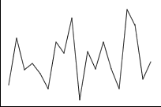

A few patterns in time series are particularly important.
- Trend
- This refers to long-term increases and decreases in the values. Identifying trend is important since we might use it to help forecast future values.
|

|
- Seasonal variation
- Seasonal variation is often evident in monthly or quarterly data and refers to a pattern that is repeated each year. For example, temperature is lowest in the winter months and highest in the summer of every year.
|

|
- Cyclic variation (autocorrelation)
- In some time series, successive values tend to be similar to the adjacent values but, unlike in a situation where there is trend, there is no systematic tendency to increase or decrease. The time series plot often appears to have irregular waves or cycles.
-
|

|
- Random fluctuations
- These are 'ups and downs' in a time series that do not correspond to trend, seasonal variation or autocorrelation.
|
 |
Most time series show more than one of these patterns to some degree.
World rice production
The time series plot below shows the total world rice production each year from 1961 to 2001.
The dominant feature of this time series is the upward trend over the period.
Tourist arrivals in Fiji
This time series shows the total number of tourists arriving in Fiji each month between January 2004 and December 2007.
Tourist arrivals are highly seasonal. In most tourist destinations, there is a single peak in the summer of each year but in Fiji, the peak is in the winter months of July to September which have less rainfall and are cooler. This is a seasonal pattern.
US defence expenditure
The time series below shows the investment in defence in the USA between 1947
and 2006, with all values reported in '2000 dollars'.
The 'wavy' appearance indicates autocorrelation — if there is high expenditure in one year, there is usually high expenditure in the adjacent years too.
British Airways share volumes traded
The final example shows the number of British Airways shares that were traded in each of the first
57 trading days of 2002 — between 2nd January and 21st March.
This time series is dominated by random fluctuations — the volume of shares traded seems to vary unpredictably.